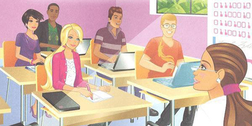

January 18, 2015
Womyn in Tech
Become a Dev While The Lines Are Still Short!
I remember seeing this image in a news article a few years ago and feeling a call to be a developer, but not just because the bathroom lines are shorter.
I’ve always been interested in math, science, and engineering, but I was pushed by a parent to study marketing. Toward the end of my college career, I realized that marketing was far from my calling. I feel, like many other women, that I was pushed into a soft skills career because of my gender. I can’t just blame the pigeonholing on one parent though. I think it’s a cultural issue.
Recently, Matel’s Computer Engineer Barbie made headlines with her “I Can Be” series book. Sadly, Barbie falls short of being anything but a failure of a programmer. She “only makes the designs” and relies on male coworkers Brian and Steven to save her from herself.
Luckily, some ladies (and gents) helped Matel rewrite the book. #FeministHackerBarbie reminds us that it’s 2015 and we’re probably done with the whole “gender roles” thing. When confronted about the poor publishing mistake, Matel promised to do better next time.
I think it’s important to remind ourselves that we’re constantly shoving each other into boxes. I don’t think we’re going to easily overcome pervasive cultural beliefs, but we can start someone. For me, being a rockin’ lady dev and sharing my skills with others is the best way to create change.